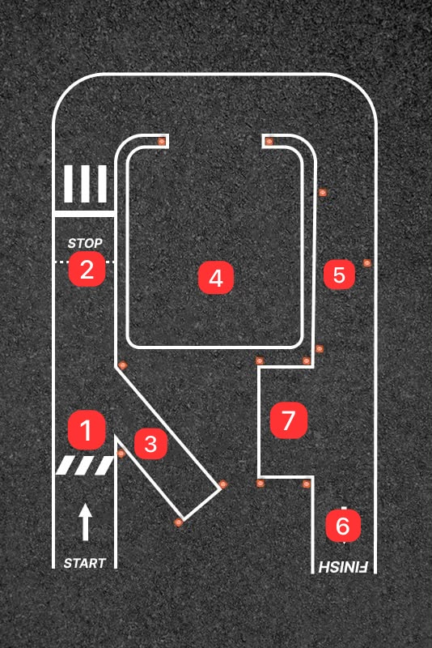

خط الانطلاق
نقطة البداية في المسار. ينطلق المتقدم من هنا بعد استلام الإشارة من الفاحص.
مخطط مسار الامتحان العملي مع شرح كل مرحلة على حدة — من نقطة الانطلاق حتى خط النهاية، بما في ذلك الوقوف والرجوع للخلف والركن.

نقطة البداية في المسار. ينطلق المتقدم من هنا بعد استلام الإشارة من الفاحص.
يجب على المتقدم الرجوع إلى الخلف بمسافة محددة مع الحفاظ على السيطرة الكاملة على المركبة.
الركن بين المركبات أو في مكان محدد دون لمس الحدود، مع إظهار التحكم الدقيق بالمقود والفرامل.
تنفيذ انعطاف حاد داخل حدود المسار دون تجاوز الخطوط.
المرور ضمن الحواجز دون تجاوز الخطوط و الحواجز
يجب على المتقدم الرجوع إلى الخلف بمسافة محددة مع الحفاظ على السيطرة الكاملة على المركبة
الركن بين المركبات أو في مكان محدد دون لمس الحدود، مع إظهار التحكم الدقيق بالمقود والفرامل بالاضافة الى اطفاء المحرك.